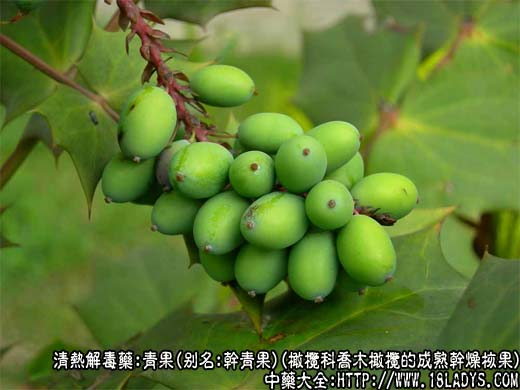
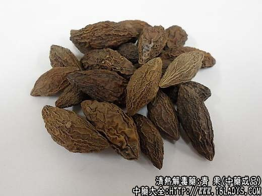
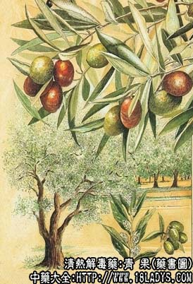

本品为少常用中药。始载宋《开宝本草》。原名橄榄。
别名：干青果，橄榄。
来源：为橄榄科植物常绿乔木橄榄的成熟干燥核果。多为栽培。
产地：主产福建、广东、四川、广西。多分布于我国温热地带。
性状鉴别：纺锤形，长约3～4厘米，直径约1.5～2厘米，表面黄棕色，皱缩。内果皮木质（果核），致密，坚硬，内三室，每一室内含一红棕色细长棱形种子，除去种皮可见白色富油质子叶两片。气微，味涩，久嚼微甜。
以个粒均匀，无破碎，果肉厚者为佳。
炮制：捣碎，生用。
性味：甘、涩、酸、平。
归经：入肺、胃经。
功能：清热解毒，利咽喉。
主治：咽喉肿痛，烦渴，解河豚中毒。